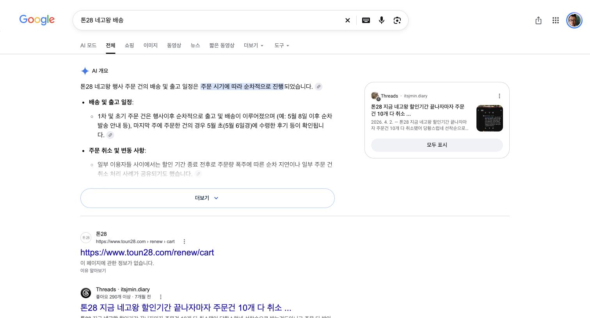
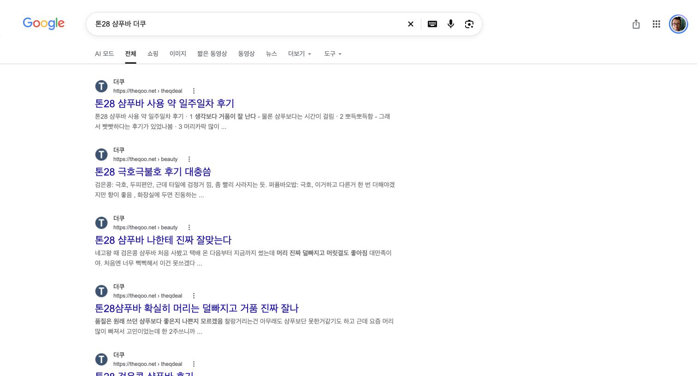
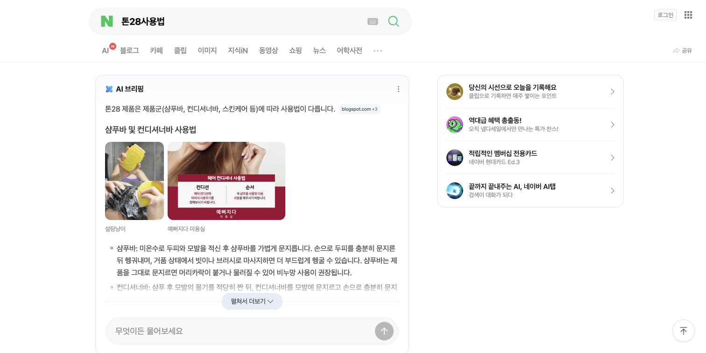
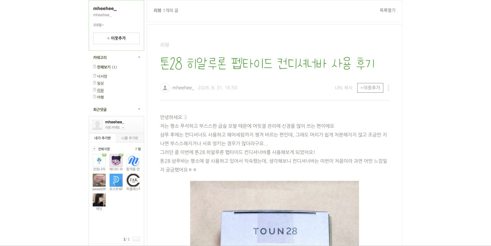
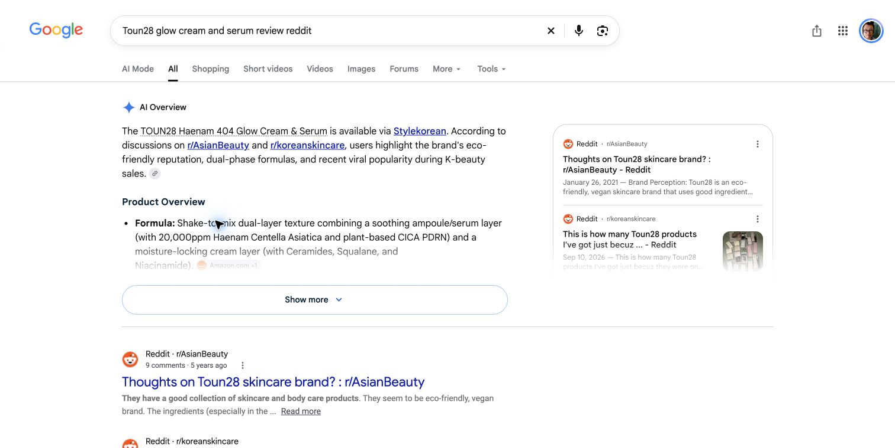
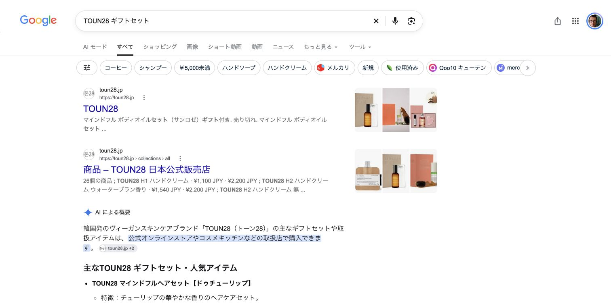
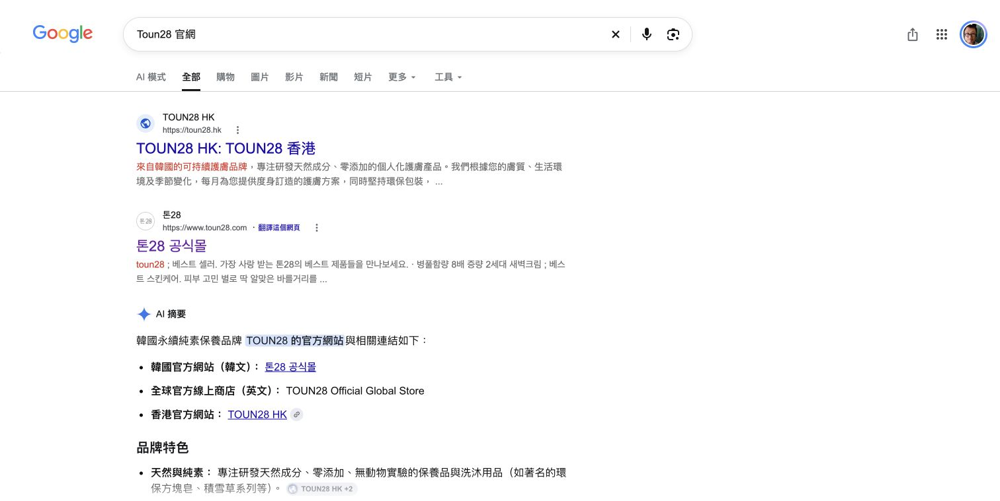

Google 한국 A
톤28 → 톤28 후기 → 톤28 내돈내산 → 톤28 네고왕 배송
2026-11-04 · 5개 검색 조건 · 대표 6경로 · 깊이0→3
Google 언어·지역 지정, 한국 위치·개인화 유지. 경로는 검색엔진의 제안 연결이다.
톤28 → 톤28 후기 → 톤28 내돈내산 → 톤28 네고왕 배송
톤28 → 톤28 부작용 → 톤28 샴푸 바 후기 → 톤28 샴푸바 더쿠
톤28 → 톤28 새벽크림 → 톤28 새벽크림 차이 → 톤28사용법
toun28 → TOUN28 glow cream and serum → Toun28 glow cream and serum review → Toun28 glow cream and serum review reddit
TOUN28 → TOUN28 シャンプー バー 口コミ → TOUN28 トリートメントバー → TOUN28 ギフトセット
TOUN28 → Toun28 評價 → Toun28 精華 → Toun28 官網
네고왕과 딜방 후기를 보고 첫 구매했다고 명시. 거품은 좋지만 액상보다 시간이 걸림. 헹굴 때 뻣뻣하며 트리트먼트를 함께 사용. 유분 조절 개선은 느끼지 못했고 보관 중 검은 물이 다른 비누에 묻었다.
방송·커뮤니티 → 구매 → 사용·보관 경험
원문 보기샴푸바의 두피 사용감과 향을 좋게 평가하면서 검은 잔여물과 소모 속도를 지적. 새벽크림2.0은 유분감·강한 향·눈가 건조감을 언급. 고가 제품과 비교하는 메시지 및 정상가에 의문을 표시.
같은 작성자의 제품별 긍정·불만을 분리할 수 있음
원문 보기한 달 넘게 기다린 배송과 개봉 경험을 서술. 알로에젤은 기존 제품과 큰 차이를 못 느꼈으며 쿨 바디바는 시원함의 지속을 언급. 자석 거치대가 떨어져 비누망으로 변경. 세럼·크림은 본인의 사용 경험이 아님.
배송 기대와 사용 후 평가, 액세서리 경험을 분리
원문 보기히알루론 펩타이드 컨디셔너바. 기존 샴푸바 사용자이며 곱슬·엉킴·부스스함을 고민으로 제시. 사용 후 차분함·부드러움·윤기와 은은한 코코넛 향을 평가. 본문 하단에 무료 제품 제공을 명시.
기능 메시지가 특정 모발 고민과 사용 경험으로 표현됨
원문 보기S19P 샴푸와 트리트먼트. 거품은 잘 나지만 씻고 헹굴 때 뻣뻣하며, 말린 뒤와 다음 날에는 차분하다고 서술. 향은 플로럴·스파이시·우디로 묘사. 트리트먼트 병용과 보관 정보를 연결.
세정 중·건조 후·다음 날로 사용 시점을 나눠 평가해야 함
원문 보기Haenam404 Glow Cream & Serum을 메이크업 전에 사용. 피부가 매끈하고 촉촉해지며 같은 파운데이션에서도 차이를 느꼈다고 서술. 댓글은 작성자를 응원하는 내용. 제품 제공 여부는 미확인.
광채·보습 메시지가 파운데이션 준비 과정과 연결
원문 보기질문자가 Gothamista의 YouTube 추천을 보고 세럼에 관심을 가졌다고 명시. 후기와 구매처를 질문. 답변에는 토너 재구매, 로션의 평범함, 에센셜오일 우려, 판매처 가격 비교가 함께 있음.
YouTube → 커뮤니티 검증 → 판매처 비교. 정확한 원본 영상은 미확보
원문 보기필자가 SNS에서 사각형 비누와 간결한 패키지를 보고 관심을 가졌다고 서술. 친환경·고체 제품·종이 포장을 설명하고 Instagram 콘텐츠를 연결.
패키지 비주얼 → SNS 관심 → 브랜드 소개 기사
원문 보기해남의 재배 환경과 농장부터 생산까지의 과정, 원료의 출처와 투명성을 설명. 페이지 하단에 Watsons 및 Cosme 판매 연결이 있음.
공식 메시지는 원료·생산 과정. 리뷰의 사용감과 별도 항목으로 매칭
원문 보기






AI개요와 네이버·티스토리·다음카페 후기, 면접후기 혼재. 2024~2026 글 포함
내돈내산 검색에도 공식 X와 제품협찬 Instagram 결과 혼재
예약 출고·배송 도착·취소 주장·무료배송 조건으로 분기. 검색 요약의 날짜는 원문 재확인 필요
광고·가격비교·블루펩타이드 클립·관련질문·블로그·카페 혼합
미국몰·Amazon·Reddit·AI개요. 한국 위치와 맞춤설정 잔존
제품 버전·피부 타입·향으로 분기; 관련질문은 주성분·적합피부·주의점
메이크업 바탕·이층상 제형, Amazon·Olive Young·공식몰·짧은 영상
AI브리핑 기존과2.0 비교; 함께많이찾는은 마스크팩까지 확장
TikTok·Facebook·Picky·화해; makeup prep·수분·광채
일본몰·CosmeKitchen·Qoo10·일본SNS. 비건·지속가능성 설명
AI브리핑은 샴푸·컨디셔너·세안바와 블루3종 사용 순서. 일부 출처 제목은 타브랜드 올고 사용법
오래된 브랜드 토론과 최근 할인 구매글 혼재; 정확한 Glow 리뷰에서 브랜드 일반 경험으로 범위 확장
LIPS·@cosme·Ameblo·화해; 거품·뻣뻣함·샴푸 품번 비교
HK몰·Watsons·HK@cosme·직구 판매처. 홍콩 결과에 대만 연관어 혼재
노워시·컨디셔너 품종 혼재, 사용법·번들·선물로 연결
Watsons 입점·환절기 보습·밤샘크림, 향·비건 콘텐츠와 상품 리뷰 혼재
바디스크럽·로션·타월, 헤어세트·향 중심 선물. 쇼핑 카드에 다른 브랜드 Tower28 혼입
抹茶·CICA·보습·메이크업 밀착, Watsons와 HK몰 설명. 評價로 순환
제품 주의사항 문구·긍정 후기·직장 리뷰·무관한 인기 페이지 혼합
홍콩·한국·글로벌 공식몰과 AboutUs 원료 설명으로 연결
샴푸 경험·트리트먼트·비듬 라인·커뮤니티로 분기; 부작용으로 순환
앞선 14번 문서의 시작 검색 관찰을 연결
더쿠 구매 경험: 네고왕·커뮤니티 후기에서 유입, 거품·헹굼·유분·보관을 평가